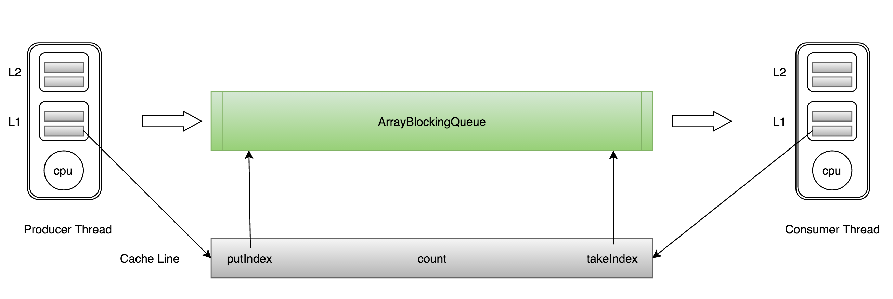

CPU缓存
网页浏览器为了加快速度,会在本机存缓存以前浏览过的数据; 传统数据库或NoSQL数据库为了加速查询, 常在内存设置一个缓存, 减少对磁盘(慢)的IO. 同样内存与CPU的速度相差太远, 于是CPU设计者们就给CPU加上了缓存(CPU Cache). 如果你需要对同一批数据操作很多次, 那么把数据放至离CPU更近的缓存, 会给程序带来很大的速度提升. 例如, 做一个循环计数, 把计数变量放到缓存里,就不用每次循环都往内存存取数据了. 下面是CPU Cache的简单示意图.
随着多核的发展, CPU Cache分成了三个级别: L1, L2, L3. 级别越小越接近CPU, 所以速度也更快, 同时也代表着容量越小.
| 从cpu到 | 大约需要的CPU周期 | 大约需要的时间(单位ns) | 内存大小 |
|---|---|---|---|
| 寄存器 | 1 cycle | ||
| L1 Cache | ~3-4 cycles | ~0.5-1 ns | 32k |
| L2 Cache | ~10-20 cycles | ~3-7 ns | 256K |
| L3 Cache | ~40-45 cycles | ~15 ns | 12MB |
| 跨cpu槽传输 | ~20 ns | ||
| 内存 | ~120-240 cycles | ~60-120ns |
public class CacheTest {
static long[][] arr;
public static void main(String[] args) {
arr = new long[1024 * 1024][];
for (int i = 0; i < 1024 * 1024; i++) {
arr[i] = new long[8];
for (int j = 0; j < 8; j++) {
arr[i][j] = 0L;
}
}
long sum = 0L;
long marked = System.currentTimeMillis();
for (int i = 0; i < 1024 * 1024; i+=1) { // 加载了1024 * 1024 次
for(int j =0; j< 8;j++){
sum = arr[i][j]; // arr[i][0] --- arr[i][7]
}
}
System.out.println("Loop times:" + (System.currentTimeMillis() - marked) + "ms"); // 18ms
marked = System.currentTimeMillis();
for (int i = 0; i < 8; i+=1) { // 加载了1024*1024 * 8
for(int j =0; j< 1024 * 1024;j++){
sum = arr[j][i];
}
}
System.out.println("Loop times:" + (System.currentTimeMillis() - marked) + "ms"); // 155ms
}
}
result:
Loop times:13ms
Loop times:58ms
CPU存取缓存都是按行为最小单位操作的. 在这儿我将不提及缓存的associativity问题, 将问题简化一些. 一个Java long型占8字节, 所以从一条缓存行上你可以获取到8个long型变量. 所以如果你访问一个long型数组, 当有一个long被加载到cache中, 将无消耗地加载了另外7个. 所以可以非常快地遍历数组.
查看cpu核心数
cat /proc/cpuinfo
查看缓存行大小
cat /sys/devices/system/cpu/cpu0/cache/index0/coherency_line_size
perf stat -e L1-dcache-load-misses java L1CacheMiss
查看L1-dcache-load-misses
L1 Cache满了之后才会发生的cache miss. 其实cache miss的原因有下面三种:
@Contended //-XX:-RestrictContended
典型的CPU微架构有3级缓存, 每个核都有自己私有的L1, L2缓存. 那么多线程编程时, 另外一个核的线程想要访问当前核内L1, L2 缓存行的数据, 该怎么办呢?
首先我们需要谈到一个协议–MESI协议, M,E,S和I代表使用MESI协议时缓存行所处的四个状态:
M(修改, Modified): 本地处理器已经修改缓存行, 即是脏行, 它的内容与内存中的内容不一样. 并且此cache只有本地一个拷贝(专有).
E(专有, Exclusive): 缓存行内容和内存中的一样, 而且其它处理器都没有这行数据
S(共享, Shared): 缓存行内容和内存中的一样, 有可能其它处理器也存在此缓存行的拷贝
I(无效, Invalid): 缓存行失效, 不能使用
初始 一开始时, 缓存行没有加载任何数据, 所以它处于I状态
**本地写(Local Write)**如果本地处理器写数据至处于I状态的缓存行, 则缓存行的状态变成M
本地读(Local Read) 如果本地处理器读取处于I状态的缓存行, 很明显此缓存没有数据给它. 此时分两种情况: (1)其它处理器的缓存里也没有此行数据, 则从内存加载数据到此缓存行后, 再将它设成E状态, 表示只有我一家有这条数据, 其它处理器都没有 (2)其它处理器的缓存有此行数据, 则将此缓存行的状态设为S状态.
远程读(Remote Read) 假设我们有两个处理器c1和c2. 如果c2需要读另外一个处理器c1的缓存行内容, c1需要把它缓存行的内容通过内存控制器(Memory Controller)发送给c2, c2接到后将相应的缓存行状态设为S. 在设置之前, 内存也得从总线上得到这份数据并保存.
远程写(Remote Write) 其实确切地说不是远程写, 而是c2得到c1的数据后, 不是为了读, 而是为了写. 也算是本地写, 只是c1也拥有这份数据的拷贝, 这该怎么办呢? c2将发出一个RFO(Request For Owner)请求, 它需要拥有这行数据的权限, 其它处理器的相应缓存行设为I, 除了它自已, 谁不能动这行数据. 这保证了数据的安全, 同时处理RFO请求以及设置I的过程将给写操作带来很大的性能消耗.
分析Volatile
| 汇编代码： | 0x01a3de1d: movb $0x0,0x1104800(%esi);0x01a3de24: lock addl $0x0,(%esp); |
| java | instance = new Singleton();//instance是volatile变量 |
lock前缀的指令在多核处理器下会引发了两件事情。
将当前处理器缓存行的数据会写回到系统内存。
这个写回内存的操作会引起在其他CPU里缓存了该内存地址的数据无效。
处理器为了提高处理速度，不直接和内存进行通讯，而是先将系统内存的数据读到内部缓存（L1,L2或其他）后再进行操作，但操作完之后不知道何时会写到内存，如果对声明了Volatile变量进行写操作，JVM就会向处理器发送一条Lock前缀的指令，将这个变量所在缓存行的数据写回到系统内存。但是就算写回到内存，如果其他处理器缓存的值还是旧的，再执行计算操作就会有问题，所以在多处理器下，为了保证各个处理器的缓存是一致的，就会实现缓存一致性协议，每个处理器通过嗅探在总线上传播的数据来检查自己缓存的值是不是过期了，当处理器发现自己缓存行对应的内存地址被修改，就会将当前处理器的缓存行设置成无效状态(I)，当处理器要对这个数据进行修改操作的时候，会强制重新从系统内存里把数据读到处理器缓存里。
如果通过嗅探一个处理器来检测其他处理器打算写内存地址，而这个地址当前处理共享状态(S)，那么正在嗅探的处理器将无效它的缓存行，在下次访问相同内存地址时，强制执行缓存行填充。
public class FalseSharing implements Runnable{
public final static long ITERATIONS = 500L * 1000L * 100L;
private int arrayIndex = 0;
private static ValueNoPadding[] longs;
public FalseSharing(final int arrayIndex) {
this.arrayIndex = arrayIndex;
}
public static void main(final String[] args) throws Exception {
for(int i=1;i<10;i++){
System.gc();
final long start = System.currentTimeMillis();
runTest(i);
System.out.println("Thread num "+i+" duration = " + (System.currentTimeMillis() - start));
}
}
private static void runTest(int NUM_THREADS) throws InterruptedException {
Thread[] threads = new Thread[NUM_THREADS];
longs = new ValueNoPadding[NUM_THREADS];
for (int i = 0; i < longs.length; i++) {
longs[i] = new ValueNoPadding();
}
for (int i = 0; i < threads.length; i++) {
threads[i] = new Thread(new FalseSharing(i));
}
for (Thread t : threads) {
t.start();
}
for (Thread t : threads) {
t.join();
}
}
public void run() {
long i = ITERATIONS + 1;
while (0 != --i) {
longs[arrayIndex].value = 0L;
}
}
// 对于伪共享，一般的解决方案是，增大数组元素的间隔使得由不同线程存取的元素位于不同的缓存行上，以空间换时间。
/**
Thread num 1 duration = 509
Thread num 2 duration = 508
Thread num 3 duration = 532
Thread num 4 duration = 1007
Thread num 5 duration = 784
Thread num 6 duration = 989
Thread num 7 duration = 905
Thread num 8 duration = 1020
Thread num 9 duration = 1163
*/
// Java long型占8字节 64字节
public final static class ValuePadding {
//如果只对final的FalseSharing类可见（就是说ValuePadding不能再被继承了）。这样一来编译器就会“知道”它正在审视的是所有可以看到这个填充字段的代码，这样就可以证明没有行为依赖于p1到p7这些字段。那么“聪明”的JVM会把上面这些丝毫不占地方的字段统统优化掉。
protected long p1, p2, p3, p4, p5, p6, p7;
protected volatile long value = 0L;
protected long p8, p9, p10, p11, p12, p13, p14;
//无论当前cache line被填充到了什么位置，我们都能保证value这个值都独自占用一个cache line
}
/**
* Thread num 1 duration = 696
* Thread num 2 duration = 1402
* Thread num 3 duration = 1830
* Thread num 4 duration = 2546
* Thread num 5 duration = 3885
* Thread num 6 duration = 3454
* Thread num 7 duration = 2713
* Thread num 8 duration = 3000
* Thread num 9 duration = 2504
*/
//我们用伪共享(False Sharing)的理论来分析一下. 后面的那个程序longs数组的4个元素,由于VolatileLong只有1个长整型成员, 所以整个数组都将被加载至同一缓存行, 但有多个线程同时操作这条缓存行, 于是伪共享就悄悄地发生了.
@Contended //-XX:-RestrictContended
public final static class ValueNoPadding {
protected volatile long value = 0L;
}
}
当多线程修改互相独立的变量时，如果这些变量共享同一个缓存行，就会无意中影响彼此的性能，这就是伪共享
XY 在同一缓存行
在核心1上运行的线程想更新变量X，同时核心2上的线程想要更新变量Y。不幸的是，这两个变量在同一个缓存行中。每个线程都要去竞争缓存行的所有权来更新变量。如果核心1获得了所有权，缓存子系统将会使核心2中对应的缓存行失效。当核心2获得了所有权然后执行更新操作，核心1就要使自己对应的缓存行失效。这会来来回回的经过L3缓存，大大影响了性能。如果互相竞争的核心位于不同的插槽，就要额外横跨插槽连接，问题可能更加严重。
总结：伪共享在多核编程中很容易发生, 而且比较隐蔽. 例如, 在JDK的LinkedBlockingQueue中, 存在指向队列头的引用head和指向队列尾的引用last. 而这种队列经常在异步编程中使有,这两个引用的值经常的被不同的线程修改, 但它们却很可能在同一个缓存行, 于是就产生了伪共享. 线程越多, 核越多,对性能产生的负面效果就越大.
High Performance Inter-Thread Messaging Library
概述-英
概述-中
介绍Disruptor之前，我们先来看一看常用的线程安全的内置队列有什么问题。Java的内置队列如下表所示。
我们就从数组和链表两种数据结构来看，基于数组线程安全的队列，比较典型的是ArrayBlockingQueue，它主要通过加锁的方式来保证线程安全；基于链表的线程安全队列分成LinkedBlockingQueue和ConcurrentLinkedQueue两大类，前者也通过锁的方式来实现线程安全，而后者以及上面表格中的LinkedTransferQueue都是通过原子变量compare and swap（以下简称“CAS”）这种不加锁的方式来实现的。
通过不加锁的方式实现的队列都是无界的（无法保证队列的长度在确定的范围内）；而加锁的方式，可以实现有界队列。在稳定性要求特别高的系统中，为了防止生产者速度过快，导致内存溢出，只能选择有界队列；同时，为了减少Java的垃圾回收对系统性能的影响，会尽量选择array/heap格式的数据结构。这样筛选下来，符合条件的队列就只有ArrayBlockingQueue。
CAS操作比单线程无锁慢了1个数量级；有锁且多线程并发的情况下，速度比单线程无锁慢3个数量级。可见无锁速度最快。
单线程情况下，不加锁的性能 > CAS操作的性能 > 加锁的性能。
在多线程情况下，为了保证线程安全，必须使用CAS或锁，这种情况下，CAS的性能超过锁的性能，前者大约是后者的8倍。
ArrayBlockingQueue有三个成员变量： - takeIndex：需要被取走的元素下标 - putIndex：可被元素插入的位置的下标 - count：队列中元素的数量
这三个变量很容易放到一个缓存行中，但是之间修改没有太多的关联。所以每次修改，都会使之前缓存的数据失效，从而不能完全达到共享的效果。
ArrayBlockingQueue伪共享示意图
Disruptor通过以下设计来解决队列速度慢的问题： - 环形数组结构
Disruptor相对于传统方式的优点：
一个生产者 直接申请内存写入m个元素 无cas 操作
多个生产者 如何防止多个线程重复写同一个元素 每个线程获取不同的一段数组空间进行操作。这个通过CAS很容易达到。只需要在分配元素的时候，通过CAS判断一下这段空间是否已经分配出去即可。
如何防止读取的时候，读到还未写的元素。Disruptor在多个生产者的情况下，引入了一个与Ring Buffer大小相同的buffer：available Buffer。当某个位置写入成功的时候，便把availble Buffer相应的位置置位，标记为写入成功。读取的时候，会遍历available Buffer，来判断元素是否已经就绪。
下面分读数据和写数据两种情况介绍。
读数据
生产者多线程写入的情况会复杂很多： 1. 申请读取到序号n； 2. 若writer cursor >= n，这时仍然无法确定连续可读的最大下标。从reader cursor开始读取available Buffer，一直查到第一个不可用的元素，然后返回最大连续可读元素的位置； 3. 消费者读取元素。
如下图所示，读线程读到下标为2的元素，三个线程Writer1/Writer2/Writer3正在向RingBuffer相应位置写数据，写线程被分配到的最大元素下标是11。
读线程申请读取到下标从3到11的元素，判断writer cursor>=11。然后开始读取availableBuffer，从3开始，往后读取，发现下标为7的元素没有生产成功，于是WaitFor(11)返回6。
然后，消费者读取下标从3到6共计4个元素。
写数据
多个生产者写入的时候： 1. 申请写入m个元素； 2. 若是有m个元素可以写入，则返回最大的序列号。每个生产者会被分配一段独享的空间； 3. 生产者写入元素，写入元素的同时设置available Buffer里面相应的位置，以标记自己哪些位置是已经写入成功的。
如下图所示，Writer1和Writer2两个线程写入数组，都申请可写的数组空间。Writer1被分配了下标3到下表5的空间，Writer2被分配了下标6到下标9的空间。
Writer1写入下标3位置的元素，同时把available Buffer相应位置置位，标记已经写入成功，往后移一位，开始写下标4位置的元素。Writer2同样的方式。最终都写入完成。
防止不同生产者对同一段空间写入的代码，如下所示：
public long tryNext(int n) throws InsufficientCapacityException
{
if (n < 1)
{
throw new IllegalArgumentException("n must be > 0");
}
long current;
long next;
do
{
current = cursor.get();
next = current + n;
if (!hasAvailableCapacity(gatingSequences, n, current))
{
throw InsufficientCapacityException.INSTANCE;
}
}
while (!cursor.compareAndSet(current, next));
return next;
}
public class LongEventMain8 {
public static void handleEvent(LongEvent event, long sequence, boolean endOfBatch)
{
System.out.println(event);
}
public static void translate(LongEvent event, long sequence, ByteBuffer buffer)
{
event.set(buffer.getLong(0));
}
public static void main(String[] args) throws Exception
{
// Specify the size of the ring buffer, must be power of 2.
int bufferSize = 1024;
// Construct the Disruptor
/**
* RingBuffer生产工厂,初始化RingBuffer的时候使用
* RingBuffer的大小
* 采用单生产者模式
*默认阻塞策略BlockingWaitStrategy
*
*/
Disruptor<LongEvent> disruptor = new Disruptor<>(LongEvent::new, bufferSize, DaemonThreadFactory.INSTANCE);
// 设置EventHandler
disruptor.handleEventsWith(LongEventMain8::handleEvent);
// Start the Disruptor, starts all threads running
disruptor.start();
// Get the ring buffer from the Disruptor to be used for publishing.
RingBuffer<LongEvent> ringBuffer = disruptor.getRingBuffer();
ByteBuffer bb = ByteBuffer.allocate(8);
for (long l = 0; true; l++)
{
bb.putLong(0, l);
ringBuffer.publishEvent(LongEventMain8::translate, bb);
Thread.sleep(1000);
}
}
}
生产者的等待策略
暂时只有休眠1ns。 LockSupport.parkNanos(1);
消费者的等待策略 等待给定的sequence变为可用